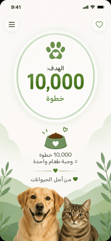

لا شيء يضاهي التدريب لترسيخ التعلم
سؤالان بسيطان
وهناك تلميح منذ البداية! أجيبوا بشكل صحيح عن سؤال واحد على الأقل للتقدم.
في اختبار الرياضيات كان هناك 20 سؤالاً. أجاب الطلاب والطالبات إجابات صحيحة عن عدد مختلف من الأسئلة.
أكملوا الجدول:
هذا غير دقيق،
يبدو أنكم أخطأتم في قيمة واحدة أو أكثر...
هل نحاول مرة أخرى؟
إجابات صحيحة!
لإيجاد النسبة المئوية، نوسّع الكسر ليصبح مقامه 100.
بما أن المقام هو 20، نبحث عن العدد الذي يجب
ضربه فيه للوصول إلى 100.
20x 5 =100
لذلك نضرب البسط أيضًا في 5 للحفاظ على قيمة الكسر.
ثم نقرأ البسط على أنه نسبة مئوية.
أخطأتم في إجابة واحدة على الأقل، دعونا نشرح...
لإيجاد النسبة المئوية، نوسّع الكسر ليصبح مقامه 100.
بما أن المقام هو 20، نبحث عن العدد الذي يجب
ضربه فيه للوصول إلى 100.
20x 5 =100
لذلك نضرب البسط أيضًا في 5 للحفاظ على قيمة الكسر.
ثم نقرأ البسط على أنه نسبة مئوية.
طلاب الصف الثامن شاركوا في تحدي الخطوات على التطبيق.
لكل 10,000 خطوة يتم إكمالها، تتلقى جمعية "من أجل الحيوانات" تبرعًا بالطعام للحيوانات.
كان هدف كل مشارك الوصول إلى 10,000 خطوة.
عرض التطبيق التقدّم بطرق مختلفة.

لكل معطى، حددوا ما إذا كان: لم يبلغ الهدف، أو بلغ الهدف، أو تجاوز الهدف.
حالة الخطوات: إنجاز 25%
حالة الخطوات: إنجاز 200%
حالة الخطوات: إنجاز 8,99910,000
هذا غير دقيق،
ربما أخطأتم في قيمة واحدة أو أكثر.
هل نحاول مرة أخرى؟
أحسنت!
يمكن مقارنة كل عدد بالواحد الصحيح.
إذا كان أصغر من 1 (أو من 100%) فهو يمثل جزءًا من الكل،
إذا كان يساوي 1 (أو 100%) فهو يمثل الكل،
إذا كان أكبر من 1 (أو 100%)، فهو يمثّل أكثر من واحد صحيح.
أخطأتم في إجابة واحدة على الأقل،
الإجابة الكاملة معروضة:
يمكن مقارنة كل عدد بالواحد الصحيح.
إذا كان أصغر من 1 (أو من 100%) فهو يمثل جزءاً من الكل،
إذا كان يساوي 1 (أو 100%) فهو يمثل الكل،
إذا كان أكبر من 1 (أو 100%)، فهو يمثّل أكثر من واحد صحيح.
أحسنت!
سنعود إلى تمرينين بمستوى صعوبة أعلى.
أنا متأكد أنكم ستنجحون!
شارك 40 من المراهقين والمراهقات في استطلاع لاختيار لون لتصميم جديد لأحذية رياضية.
يوضح الجدول عدد المصوّتات والمصوّتين الذين اختاروا كل لون، ويُمثَّل هذا العدد بكسر من مجموع المشاركات والمشاركين.
أكملوا عمود النسب المئوية.
هذا غير دقيق،
قد تكونون أخطأتم في قيمة واحدة أو أكثر.
هل نحاول مرة أخرى؟
أحسنت!
لتسهيل المقارنة بين اختيارات المراهقين، من المناسب تمثيل البيانات بالنسبة المئوية. ولتحقيق ذلك، يُستحسن تبسيط الكسور ثم توسيعها إلى مقام 100.
أخطأتم في إجابة واحدة على الأقل،
الإجابة الكاملة معروضة.
لتسهيل المقارنة بين اختيارات المراهقين، من المناسب تمثيل البيانات بالنسبة المئوية. ولتحقيق ذلك، يُستحسن تبسيط الكسور ثم توسيعها إلى مقام 100.
شارك صفّان في المسابقة المدرسية بنشر فيديو.
حصل فيديو الصف الثامن/1 على 28 إعجابًا من أصل 32 طالبًا شاهدوه.
حصل فيديو الصف الثامن/2 على 30 إعجابًا من أصل 40 طالبًا شاهدوه.
ناقش ماجد وعادل أيّ الفيديوهين حقّق نجاحًا أكبر (تأمّلوا القصة المصوّرة).
أ. مَن المحقّ؟
هذا غير دقيق،
هل نحاول مرة أخرى؟
صحيح! ماجد محق.
لا يمكن تحديد أيّ صفّ حقّق نجاحًا أكبر من عدد الإعجابات وحده،
لأن عدد الطلاب الذين شاهدوا الفيديو يختلف من صفّ إلى آخر.
تذكير: عند مقارنة مجموعات مختلفة الأحجام، نقارن الجزء
من الكل، وليس الأعداد نفسها فقط.
هذا خطأ، فلنكن دقيقين
لا يمكن تحديد أيّ صفّ حقّق نجاحًا أكبر من عدد الإعجابات وحده،
لأن عدد الطلاب الذين شاهدوا الفيديو يختلف من صفّ إلى آخر.
تذكير: عند مقارنة مجموعات مختلفة الأحجام، نقارن الجزء
من الكل، وليس الأعداد نفسها فقط.
"نسبة مَن ضغطوا على إعجاب من بين مشاهدي فيديو الصف الثامن/1 أعلى، ولذلك حقّق نجاحًا أكبر"
ماجد"حصل الصف الثامن/2 على إعجابات أكثر، ولذلك حقّق الفيديو الخاص به نجاحًا أكبر"
عادلب. ما الخطأ في ادّعاء عادل؟
هذا غير دقيق،
هل نحاول مرة أخرى؟
إجابة صحيحة!
قارن عادل عدد الإعجابات فقط، لكنه تجاهل أن
عدد الطلاب الذين شاهدوا الفيديو يختلف من صفّ إلى آخر.
للمقارنة بشكل عادل، يجب مقارنة نسبة النجاح،
أي النسبة المئوية للإعجابات من إجمالي مشاهدات كل فيديو،
وليس عدد الإعجابات فقط.
هذا خطأ، لنكن دقيقين
قارن عادل عدد الإعجابات فقط، لكنه تجاهل أن
عدد الطلاب الذين شاهدوا الفيديو يختلف من صفّ إلى آخر.
للمقارنة بشكل عادل، يجب مقارنة نسبة النجاح،
أي النسبة المئوية للإعجابات من إجمالي مشاهدات كل فيديو،
وليس عدد الإعجابات فقط.
"نسبة مَن ضغطوا على إعجاب من بين مشاهدي فيديو الصف الثامن/1 أعلى، ولذلك حقّق نجاحًا أكبر"
ماجد"حصل الصف الثامن/2 على إعجابات أكثر، ولذلك حقّق بالتأكيد نجاحًا أكبر"
عادل